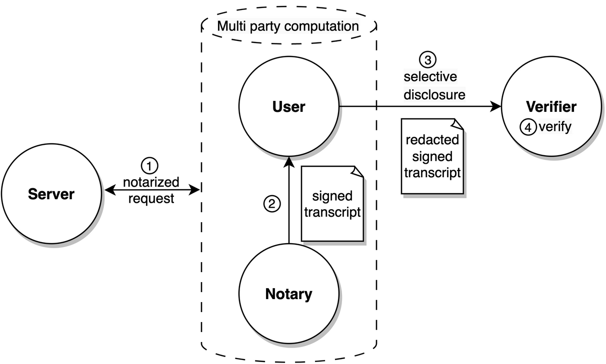

Introduction
Data Provenance without Compromising Privacy, That is Why!
The Internet currently lacks effective, privacy-preserving Data Provenance. TLS, also known as the "s" in "https" 🔐 to the general public, ensures that data can be securely communicated between a server and a user. But how can this user credibly share this data with another user or server without compromising security, privacy, and control?
Enter TLSNotary: a protocol enabling users to export data securely from any website. Using Zero Knowledge Proof (ZKP) technology, this data can be selectively shared with others in a cryptographically verifiable manner.
TLSNotary makes data truly portable and allows users to share it with others as they see fit.
How Does the TLSNotary Protocol Work?
The TLSNotary protocol consists of 4 steps:
- The
Userrequests the data from theServerprivately and securely. - The
Notarychecks for data tampering and signs the data. - The
Userselectively discloses the data to theVerifier. - The
Verifierverifies the data.

① Multi-party TLS Request
TLSNotary works by adding a third party, the Notary, to the usual TLS connection between the User and a Server. This Notary is not "a man in the middle". Instead, the Notary participates in a secure multi-party computation (MPC) to jointly operate the TLS connection without ever seeing the data in plain text; the Notary only sees encrypted data. Given that the Notary only sees the temporary key of the Server, the Notary does not know which Server the User is communicating with. The TLSNotary protocol is transparent to the Server. From the Server's perspective, the User's connection is a standard TLS connection.
② Notarization
By participating in the secure multi-party computation (MPC) for TLS communication, the Notary can validate the authenticity and integrity of the User's communication with the Server. If the User was honest, the Notary signs the transcript of the entire TLS session. Since the Notary only validates encrypted data, this process is referred to as "blind signing".
③ Selective Disclosure
The TLSNotary protocol provides a means for the User to selectively prove the authenticity of arbitrary sections of the transcript to a Verifier. In this context, the User is often referred to as the Prover.
The User can redact sections of the transcript, thereby not disclosing sensitive data to the Verifier. This capability can be paired with Zero-Knowledge Proofs to prove properties of the redacted data without revealing the data itself.
④ Verification
A Verifier validates the proof received from the User. By comparing the signature against the Notary's public key, the Verifier ensures that the User did not tamper with the data.
The data origin can be verified by inspecting the Server certificate through trusted certificate authorities (CAs).
Trust Assumptions
TLSNotary requires a trust assumption. A Verifier of a proof must trust that the Notary did not collude with the User to forge it. This trust can be minimized by requiring multiple proofs, each signed by a different notary.
In certain applications, the Verifier might also function as the Notary, leading to fully trustless proofs.
What Can TLSNotary Do?
TLSNotary can be used for various purposes. For example, you can use TLSNotary to prove that:
- you have access to an account on a web platform
- a website showed specific content on a certain date
- you have private information about yourself (address, birth date, health, etc.)
- you have received a money transfer using your online banking account without revealing your login credentials or sensitive financial information
- you received a private message from someone
- you were blocked from using an app
- you earned professional certificates
While TLSNotary can notarize publicly available data, it does not solve the "oracle problem". For this use case, existing oracle solutions are more suitable.
Who is behind TLSNotary?
TLSNotary is developed by the Privacy and Scaling Exploration (PSE) research lab of the Ethereum Foundation. The PSE team is committed to conceptualizing and testing use cases for cryptographic primitives.
TLSNotary is not a new project; in fact, it has been around for more than a decade.
In 2022, TLSNotary was rebuilt from the ground up in Rust incorporating state-of-the-art cryptographic protocols. This renewed version of the TLSNotary protocol offers enhanced security, privacy, and performance.
Older versions of TLSNotary, including PageSigner, have been archived due to a security vulnerability.